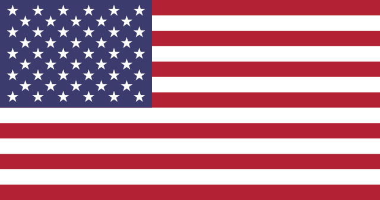
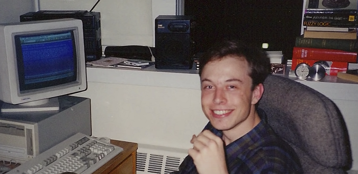
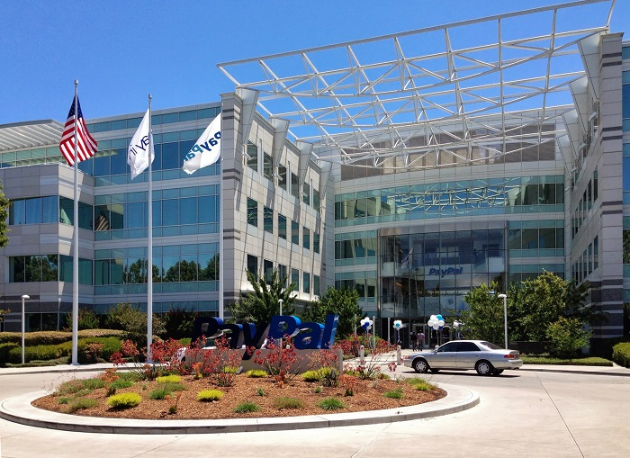
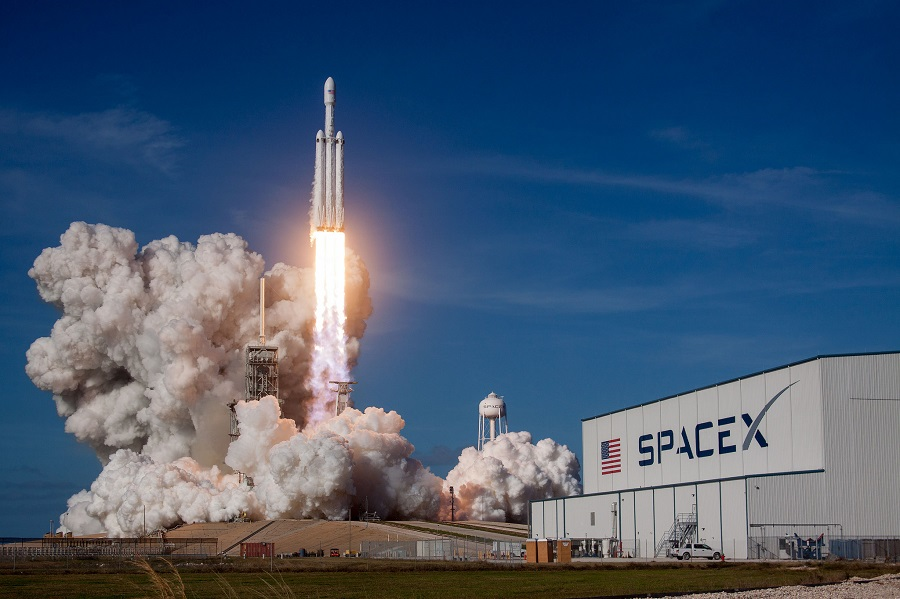

Elon Musk is a business magnate, industrial designer and engineer.
Forbes estimated his net worth at US$132.1 billion,
making him the second-richest person in the world, after Jeff Bezos.
He is the founder, CEO, CTO and chief designer of SpaceX,
a company which develops reusable rockets.
He is the early investor, CEO and product architect of Tesla Inc.
Tesla is the company which develops electric cars,
which are also the safest cars in the world.
Musk is also the founder of The Boring Company.
This company is boring tunnels under Los Angeles, to solve traffic problems.
On top of taht he is Co-founder of Neuralink,
the company, which is developing implantable brain–machine interfaces.
These implants will allow quadriplegic people walk again.
Life in South Africa (childhood)
Elon Musk's parents, Errol Musk and May Mask married in 1970.
They have three childreen: Elon, Kimball and Tosca Musk.
Three years later they got divorced and the children stayed with their father.
Elon Musk was bullied in school, so he prefered to study alone. When he was 12, he sold a computer game of his own design Blastar for 500$.
The earned money he invested in the pharmatiutical companies.
He later sold his stocks and bought a ticket to Canada against father's solution and immigrated there.
His mother was born in Canada, so he got Canadian citizenship.
Elon made this step, because he didn't want to serve
in the army of South Africa and because he knew that
the best technologies are often originate in the North America.
Life in Canada (education and survival jobs)
It is important to say, that Elon's escape
from South Africa wasn't well planned.
All that Elon knew was that he had great uncle in Montreal. So he got on a plane and relied on luck.
After the plane landed he tried to find his great
uncle using help desk, but unsucessfully.
It turned out that his great uncle had moved to Minnesota
and Elon had no place to stay!
After this horrible start Elon Musk spent
several days in a nearby hostel thinking what to do.
Finally, he travelled 3000km by bus
to a small city Swift Current, where his second cousin lived.
Throughout out the 1989 he worked on different "survival jobs".
In 1990, when Elon Musk was 19 years old, he was enrolled at Queen's University at Kingston.
That's where he studied for 2 years until 1992.
Life in the USA (becoming a millionaire)

He flew to the USA and transferred from Queen's University at Kingston
to the University of Pennsylvania.
He was given a scholarship in it.
Elon also graduated with bachelor's degrees in economics and applied physics there.
In 1995 at the age of 25, he entered Standford university
to obtain a doctoral degree in applied physics and materials science.
However after a few days he left it, because
he decided to take part in internet boom,
launching his first start-up Zip2 Corporation.

While developing Zip2 Elon Musk and his brother Cimball
rented an office, where they were living and working.
They had one computer, so Elon was working during the nights
while his brother was working during the days.
To have a shower they went to a gym nearby.
Their hard work was rewarded. The project was a huge success.
In 1999 Compaq bought Zip2 for $307 million. At the early age of 20 years Elon became a multimillionaire.

The money he earned were invested at Elon's new start-up - X.com,
which was the first online banking company.
A year later in 2000, it merged with Confinity (Peter Till's company)
and became the famous PayPal.
Later this company was sold to eBay.
The deal bought $165 million to Elon.

In 2002, Elon Musk founded his third company - SpaceX.
He invested $100 million in it.
Elon Musk tried to hire the very best engineers for it,
but no one believed in his private space company.
So he became its CTO and took part in developing rockets himself.
After some successful launches in december of 2008
NASA signed contract a contract with SpaceX.
This contract's worth was $1,6 billions,
and it included 12 launches Falcon 9 and space ship Dragon to the ISS.
 Elon Musk is a business magnate, industrial designer and engineer.
Elon Musk is a business magnate, industrial designer and engineer.